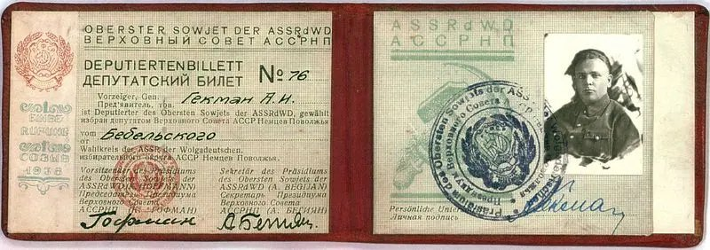

Arbeitsweise
Wie Wolgawurzeln recherchiert, woran Sie eine belastbare Aussage erkennen und wo die Grenzen der Überlieferung liegen.
Quellen
Jede Recherche stützt sich auf Quellen, die sich nachprüfen lassen: die Listen der Ansiedlung von 1764 bis 1767, die Revisionslisten der Kolonien, Kirchenbücher, Koloniechroniken, Gedenkbücher und Bestände staatlicher und kirchlicher Archive in Deutschland und Russland. Erinnerungen der Familie werden ernst genommen, sie sind oft der Schlüssel. Als Beleg gelten sie erst, wenn eine Quelle sie bestätigt.
Belege
Ein Bericht ist keine ausgeschmückte Erzählung. Er hält fest, was die Quellen hergeben, und zeigt, woher jede Angabe stammt. Zentrale Angaben tragen deshalb eine Quellenziffer. Am Ende steht das vollständige Quellenverzeichnis. So sehen Sie bei jedem Satz, worauf er beruht, und können ihn selbst nachvollziehen oder von anderen prüfen lassen.
So sieht es im Bericht aus: Befund mit Einordnung, Stammtafel mit Grundlage, Abschrift mit Lesehilfe. Zum Vergrößern antippen.
Einordnung
Nicht jede Aussage ist gleich sicher. Deshalb wird jeder Befund einer von drei Stufen zugeordnet:
belegt
Eine Quelle nennt die Person oder Familie ausdrücklich, und die Angaben passen zusammen.
wahrscheinlich
Mehrere Hinweise stützen die Aussage, ein direkter Beleg fehlt aber noch.
offen
Die Quellen reichen nicht aus. Offene Punkte werden benannt, mit einem Hinweis, wo sich weitersuchen ließe.
Wie die Einordnung in einem fertigen Bericht aussieht, zeigen die Beispielberichte.
Archive in Russland und vor Ort
Viele Akten liegen in Russland: Strafakten, Unterlagen der Sondersiedlung und die Bestände der Gebietsarchive. Anfragen dorthin gehören zur Einzelfallrecherche. Wie lange eine Antwort dauert, hängt vom Archiv ab. Über spezialisierte Partner geht es oft schneller als auf dem üblichen Weg.
Was weder online noch per Anfrage zugänglich ist, wird vor Ort in Archiven und Bibliotheken eingesehen.

Grenzen
Vieles ist erhalten, manches nicht. Die Volkszählung von 1897 ist für die Wolgakolonien größtenteils verloren, Kirchenbücher sind von Dorf zu Dorf sehr unterschiedlich überliefert, und Namen erscheinen in russischen Akten oft in veränderter Schreibweise. Wann ein russisches Archiv antwortet, lässt sich auch mit Kontakten vor Ort nicht fest zusagen. Wenn die Quellen zu einer Frage nichts hergeben, steht das offen im Bericht.
Vertraulichkeit
Familiengeschichten sind persönlich. Ihre Angaben werden nur für Ihre Recherche verwendet, veröffentlicht wird nichts ohne Ihre ausdrückliche Zustimmung. Die Beispielberichte zeigen echte Nachnamen, Kolonien und Quellen, ihr Text ist für die Beispiele geschrieben. Angaben zu lebenden Menschen enthalten sie nicht.
Sprachen und Schrift
Recherchiert wird auf Deutsch und Russisch, übertragen werden alte Handschriften beider Sprachen: deutsche Kurrentschrift, Sütterlin und russische Schreibschrift des 19. und 20. Jahrhunderts.